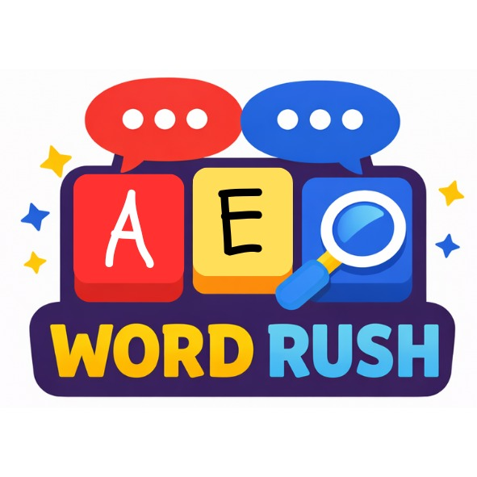

An educational Malay to English typing and translation game designed to help you improve your vocabulary skills. Type the correct English translation for each Malay word as quickly and accurately as you can!